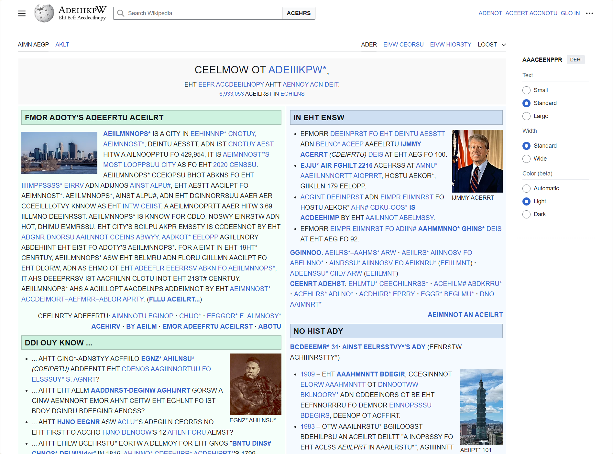

Ever wished reading was harder?
Here's a website that shows you Wikipedia pages with every word sorted alphabetically. Have fun.
To make things somewhat easier (?) to read, I added Zyzzyva-style lexicon symbols: a * symbol after a word means that word isn't found in either of the two Scrabble dictionaries I'm referencing (the North American one, NWL2023, and the British one, CSW21). A # symbol means the word is in CSW21 but not NWL2023 (which usually means it's obscure or archaic; in terms of what you'd encounter on Wikipedia, a lot of these are common English first names that have some sort of obscure meaning as a Dictionary Word) and a $ symbol means it's in NWL2023 but not CSW21 (this case is rare, but it does happen sometimes.) Maybe this means this can theoretically act as a fun word study tool for Scrabble players, though I can't make any guarantees as to its effectiveness.
I can't really speak from the perspective of a non-Scrabble-player, but if you are one of those, I'm sure you can also figure out a way to play with this for five minutes. Click ADMNOR ACEILRT and try to read as much as you can or something. It's probably a better use of time than whatever else you were going to do anyway, unless the thing you were going to do was finally getting into Scrabble.
Am I just writing this because I realized I was about to lose my one-blog-post-per-year streak and it's the last day I can save it? ... maybe
I made this in, like, March. I don't think it was even my idea. It was Evan's idea. Thanks, Evan. I also don't really want to direct a bunch of traffic to this thing because I'm running it on the free tier of one of those Vercel-type microservice hosts (so please don't post this on Reddit or anything). Yet, somehow, this was the only thing I could think of to write about this entire year.
It's not that I don't write a lot. Most of my writing gets directed straight to the newspaper I'm an editor for every other week. I created this website for the stuff that didn't really fit there — writeups of fun little projects that required links and images and videos and were generally too self-indulgent to appear anywhere but a personal website.
And I guess there just haven't been a lot of those lately. Every so often an old friend will ask what I've been up to, telling me they remember my silly keyboards and accidental Instagram bug bounties and stuff and wondering what the next version of that is.
I've certainly tried to work on new projects, but between school, working full-time in co-op positions, and dealing with everything else life throws at me in between, there isn't a lot of time to get into the flow of working on the things I want to make. I made games for a handful of game jams, but those inevitably got left in a state of perpetual unfinishedness as soon as the jams ended.
I guess I'll never really be a bored high schooler again. I don't even think the lack of free time is an issue. I had four months free at the beginning of this year in which I audited two or three classes outside of my degree program and started a couple engineering projects that I tried my best to finish. I'd previously suspected that I'd just been burned out from classwork and job work, and clearing my head of all of that would give me space to find joy working on personal projects again, but it didn't happen. I suspect that the energy I had to build stuff in high school came from feeling like programming was important to me personally but wasn't as much a part of my life as I wanted it to be, and that probably won't ever be the case anymore. Instead, this year I naturally gravitated toward spending my free time on other things that are important right now — friendships, relationships, new experiences, personal development, et cetera. It makes a lot of sense in retrospect, and I probably should have realized this sooner. I never finished any of the projects I tried to start. Maybe I'll finish one next year, maybe I won't. You'll probably find out at the same time as I do.
So I guess what I've ended up with as the project of the year is this: a funny little website that I spent a few hours making back in March. I hope you enjoy it.